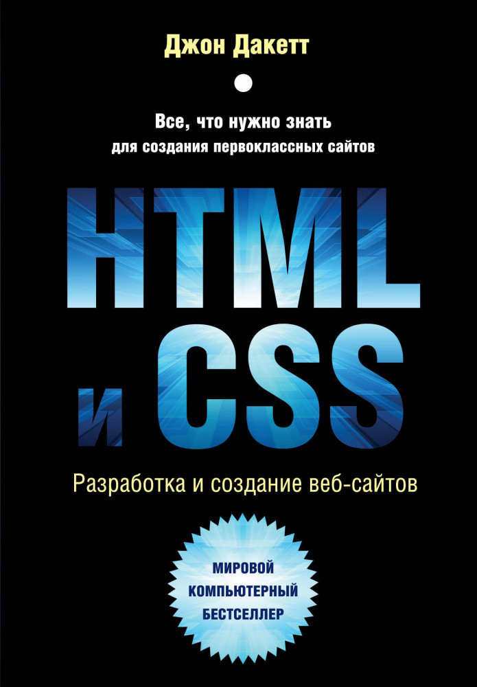
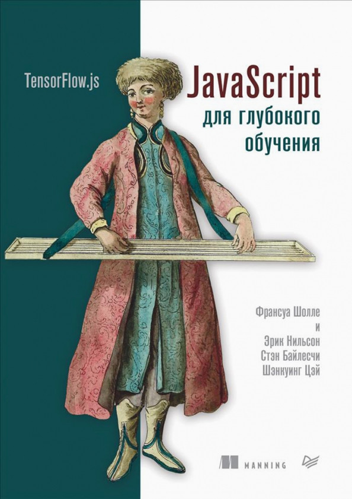

|  |  | |
|---|---|---|
Краткое описание |
Краткое описание |
Краткое описание |
| Эта книга — самый простой и интересный способ изучить HTML и CSS. Независимо от стоящей перед вами задачи: спроектировать и разработать веб-сайт с нуля или получить больше контроля над уже существующим сайтом, эта книга поможет вам создать привлекательный, дружелюбный к пользователю веб-контент. Простой визуальный способ подачи информации с понятными примерами и небольшим фрагментом кода знакомит с новой темой на каждой странице. Вы найдете практические советы о том, как организовать и спроектировать страницы вашего сайта и после прочтения книги сможете разработать свой веб-сайт профессионального вида и удобный в использовании. |
Пора научиться использовать TensorFlow.js для построения
моделей глубокого обучения, работающих непосредственно в
браузере! Умные веб-приложения захватили мир, а реализовать
их в браузере или серверной части позволяет TensorFlow.js.
Данная библиотека блестяще портируется, ее модели работают
везде, где работает JavaScript. Специалисты из Google Brain создали книгу, которая поможет решать реальные прикладные задачи. Вы не будете скучать над теорией, а сразу освоите базу глубокого обучения и познакомитесь с продвинутыми концепциями ИИ на примерах анализа текста, обработки речи, распознавания образов и самообучающегося игрового искусственного интеллекта. |
Книга посвящена созданию веб-сайтов на языке Python с
использованием веб-фреймворка Django 3.0. Рассмотрены новинки
Django 3.0 и дано наиболее полное описание его инструментов:
моделей, контроллеров, шаблонов, средств обработки
пользовательского ввода, включая выгруженные файлы,
разграничения доступа, посредников, сигналов, инструментов
для отправки электронной почты, кэширования и пр. Рассмотрены дополнительные библиотеки, производящие обработку BBCode-тегов, CAPTCHA, вывод графических миниатюр, аутентификацию через социальные сети (в частности, «ВКонтакте»), интеграцию с Bootstrap. Рассказано о программировании веб-служб REST, использовании и настройке административного веб-сайта Django, публикации сайтов с помощью веб-сервера Uvicorn, работе с базами данных PostgreSQL, кэшировании сайтов с помощью Memcached и Redi. Подробно описано создание полнофункционального веб-сайта — электронной доски объявлений, веб-службы, работающей в его составе, и тестового фронтенда для нее, написанного на Angular. Электронное приложение-архив на сайте издательства содержит коды всех примеров. |
| Заказать книгу | Заказать книгу | Заказать книгу |
На главную |
||